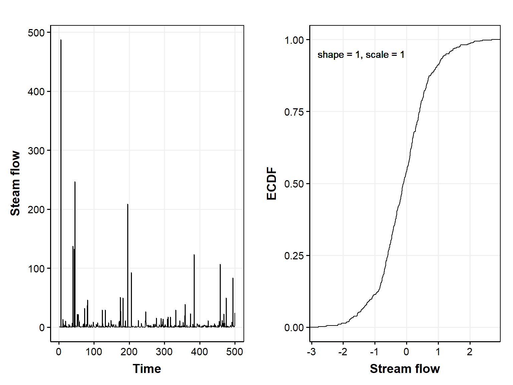
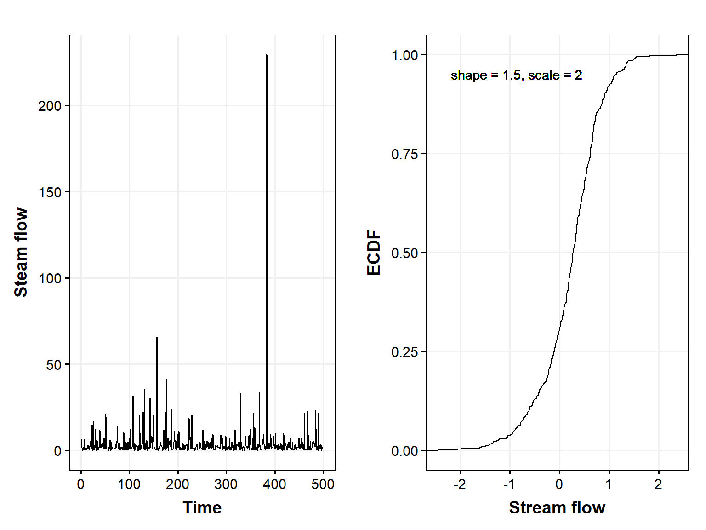
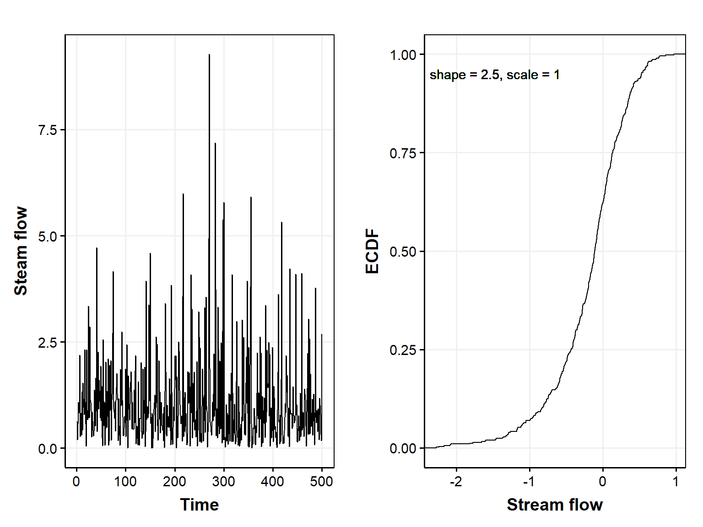
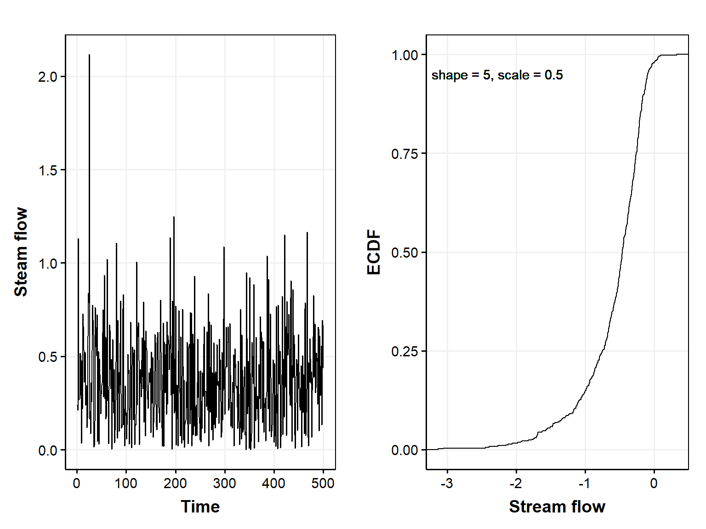

Code
library(FAdist)
library(getPrepareWBData)
library(ggpubr)
library(tidyverse)library(FAdist)
library(getPrepareWBData)
library(ggpubr)
library(tidyverse)Functions to generate and plot flow time series and empirical cumulative distribution plots using a 2-parameter kappa function
getStreamFlow <- function(n, shape, scale) {
if (n <= 0) stop("n must be a positive integer")
stream_flow_values <- rkappa(n = n, shape = shape, scale = scale)
ts(stream_flow_values)
}
plotFlows <- function(params)
# nIn = 1000, shapeIn = 1.5, scaleIn = 2)
{
flowTS <- getStreamFlow(params$n, params$shape, params$scale)
flowDF <- data.frame(t = 1:params$n, flow = flowTS)
# Convert time series data to a data frame for ggplot
if(params$logECDF) {
ecdfDF <- data.frame(value = as.vector(log10(flowTS)))
} else {
ecdfDF <- data.frame(value = as.vector(flowTS))
}
# Plot the ECDF using ggplot2
#
gFlow <- ggplot(flowDF, aes(t, flow)) +
geom_line() +
labs(
x = "Time",
y = "Steam flow"
) +
theme_publication()
#
gECDF <- ggplot(ecdfDF, aes(x = value)) +
stat_ecdf(geom = "step") +
labs(
x = "Stream flow",
y = "ECDF"
) +
geom_text(
aes(x = min(ecdfDF) + (max(ecdfDF) - min(ecdfDF)) * 0.25, y = 0.95),
label = paste0("shape = ", params$shape, ", scale = ", params$scale)
) +
theme_publication()
return(
list(
plots = ggarrange(gFlow, gECDF),
flow = flowDF,
ecdf = ecdfDF
)
)
}Smaller shape = more extreme flows
Smaller scale = lower flows
params <- list(
n = 500,
shape = 1,
scale = 1,
logECDF = TRUE
)
d_1_1 <- plotFlows(params)
d_1_1$plots
params <- list(
n = 500,
shape = 1.5,
scale = 2,
logECDF = TRUE
)
d_15_2 <- plotFlows(params)
d_15_2$plots
params <- list(
n = 500,
shape = 2.5,
scale = 1,
logECDF = TRUE
)
d_25_1 <- plotFlows(params)
d_25_1$plots
params <- list(
n = 500,
shape = 5,
scale = .5,
logECDF = TRUE
)
d_5_05 <- plotFlows(params)
d_5_05$plots